3WL
3WL are air circuit breakers. They can transfer important information to the software to carry out diagnostics management, fault management, maintenance management, and cost center management.
Connect the 3WL air circuit breakers via COM35 or COM16. You can use any other gateway to establish the connection.
The circuit breaker status is displayed in Powermanager and the measured values and can be switched with the appropriate authorization.
There are two switching functions:
- ON - Select ON when the circuit breaker status is
OFForTRIPPED. - OFF - Select OFF when the circuit breaker status is
ON.
For more information, refer to the 3WL/3VL system manual.
State symbols of the molded-case circuit breaker
Different states of the molded-case circuit breaker are represented as a circuit breaker symbol. The state symbol of the molded-case circuit breaker indicates the position of the molded-case circuit breaker in the frame. You can see whether the molded-case circuit breaker is open or closed. The background color designates the status of the relevant message.
Color | Message status | Meaning |
Green | Green | No messages pending |
Yellow | Yellow | At least one warning message or one threshold warning is pending |
Red | Red | At least one trip message is currently pending |
White | White | No information available about the existence of messages |
State Symbol with Guide Frame | Description of the State |
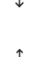 | The circuit breaker is not available. |
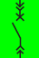 | The circuit breaker is in the connected position and open. At the moment, neither trip messages nor warning messages or threshold messages are pending. |
The circuit breaker is in the connected position and open. A trip message is pending. | |
The circuit breaker is in the connected position and open. At least one warning message or one threshold warning is pending. | |
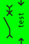 | The circuit breaker is in test position and opened. At the moment, neither tripping nor warning or setpoint messages are present. |
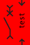 | The circuit breaker is in test position and opened. At the moment, a tripping message is present. |
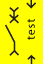 | The circuit breaker is in test position and opened. At the moment, at least one warning or setpoint message is present. |
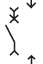 | The circuit breaker is in disconnected position. |
The circuit breaker is in connected position and closed. At the moment, there are neither tripping nor warning or setpoint messages present. | |
The circuit breaker is in connected position and closed. At the moment, a tripping message is present. | |
The circuit breaker is in connected position and closed. At the moment, at least one warning or setpoint message is present. | |
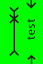 | The circuit breaker is in the test position and closed. At the moment, neither trip messages nor warning messages or threshold messages are pending. |
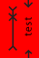 | The circuit breaker is in the test position and closed. A trip message is pending. |
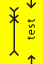 | The circuit breaker is in the test position and closed. At least one warning message or one threshold warning is pending. |
The circuit breaker is in connected position. It is unknown whether the switch is closed or opened. At the moment, neither tripping nor warning or setpoint messages are present. | |
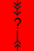 | The circuit breaker is in connected position. It is unknown whether the switch is closed or opened. At the moment, a tripping message is present. |
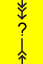 | The circuit breaker is in the connected position. It is not known whether the molded-case circuit breaker is open or closed. At least one warning message or one threshold warning is pending. |
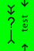 | The circuit breaker is in test position. It is unknown whether the switch is closed or opened. At the moment, neither tripping nor warning or setpoint messages are present. |
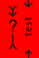 | The circuit breaker is in test position. It is unknown whether the switch is closed or opened. At the moment, a tripping message is present. |
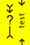 | The circuit breaker is in test position. It is unknown whether the switch is closed or opened. At the moment, at least one warning or setpoint message is present. |
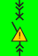 | The circuit breaker is in test position and has tripped. At the moment there are neither tripping nor warning or setpoint messages present. |
The circuit breaker is in test position and has tripped. At the moment, a tripping message is present. | |
The circuit breaker is in test position and has tripped. At the moment, at least one warning or setpoint message is present. | |
offline | The air circuit breaker is offline. |

NOTE:
The 3WL circuit breaker does not support Power Quality.